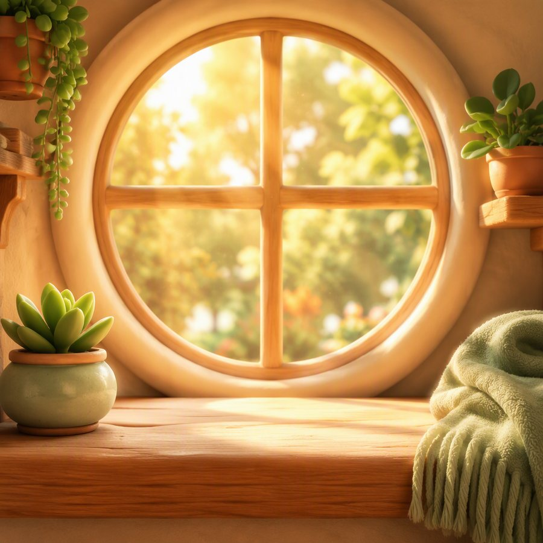

手表

它出门了
大概傍晚回来

它回来了
带回一颗果子
9:41
出门中
傍晚回来
方向 C · 它自己的生活 — 微缩景箱 Diorama / Terrarium
每一屏都收进一只有肩有唇的罐子——罐外是冷色的暗室,安静、无光;罐内叠三层 景深(模糊的地面/场景、对焦清晰的宠物、虚化在最前面的草叶与浮尘),靠一道暖黄光源 和一道贴着罐身弧度走的清澈玻璃反光,拉出"向内看"的立体感。玻璃是透亮的, 不是磨砂的——这是和"毛玻璃"那套刻意拉开的地方。
它出门了
大概傍晚回来
它回来了
带回一颗果子
7 样 · 还有很多没见过
 刚到手
刚到手

 ✦
✦ ✦
✦
 ✦
✦套装 · 林线
4/6，集齐解锁新的散步路线，缺的两样在湖边
刚收到 · 一颗果子它说路边捡的，不太确定能不能吃
它自己的视角,不是你的记录
今天走得比平常远。你好像也走了不少，我们大概错过了。带了一颗果子回来。
窗台那边太阳很好，躺了一会儿。你一直没回来。
再往前就翻不到了 · 它也没打算全记住
在家 · 刚回来
